class: center, middle # EE-464 STATIC POWER CONVERSION-II # Inverters Cont. ## Ozan Keysan ## [keysan.me](http://keysan.me) ### Office: C-113 <span class="meta">•</span> Tel: 210 7586 --- # Three Phase Inverters -- <img src="https://megaresistors.com/wp-content/uploads/2018/10/abb_vfd_family.png" alt="Drawing" style="width: 600px;"> ### Different Sized Variable Frequency Drives (VFD) --- # Three Phase Inverters -- <img src="http://in.element14.com/productimages/large/en_GB/42270890.jpg" alt="Drawing" style="width:800px;"> --- # Three Phase Voltage-Source Inverter -- 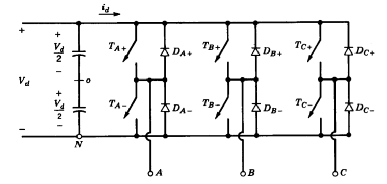 ### Three inverter legs are connected in parallel --- # Three Phase Voltage-Source Inverters -- - ## Do not close top and bottom switches at the same time -- - ## Point (o) is not needed put shown for simplicity in calculations -- - ## Current can flow through the switch or anti-parallel diodes. --- # PWM Techniques -- ### There are many different PWM techniques that will be covered: -- - ## Square-wave (Six-step) PWM -- - ## Sinusoidal PWM (SPWM) -- - ## Hysteresis (Bang-Bang) Control -- - ## Space-Vector PWM (SVPWM) -- - ## Third harmonic injection --- # Six-Step Inverter -- ### Commonly used in BLDC motor Drives <img src="https://hackaday.com/wp-content/uploads/2015/09/open-source-esc-featured.jpg" alt="Drawing" style="width: 800px;"> --- # Six-Step Inverter -- ### Commonly used in BLDC motor Drives <img src="http://www.mpoweruk.com/images/BLDCControl.gif" alt="Drawing" style="width: 800px;"> --- # Six-Step Inverter -- - ### Each switch has 50% duty ratio. -- - ### Each leg has a phase difference of 120 degrees -- - ### One switching action takes place at every 60 degrees --- # Six-Step Inverter -- 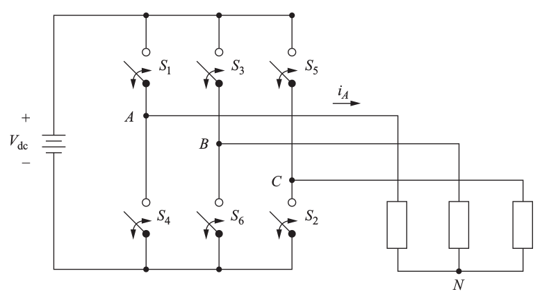 --- # Six-Step Inverter -- <img src="./images/ee464/six_step_switches.png" alt="Drawing" style="width: 750px;"> --- # Six-Step Inverter ## Line-to-line voltage: \\(V\_{AB}=V\_{A0}-V\_{B0}\\) -- 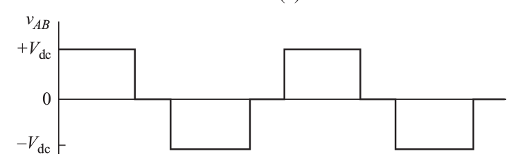 --- ## Line-to-line voltages: -- 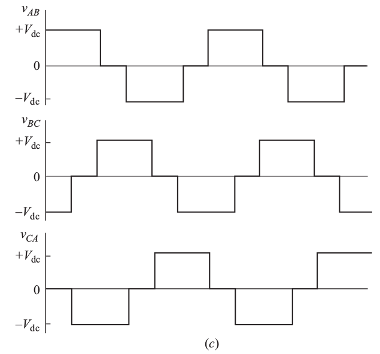 --- # Square Wave Operation <img src="https://media.giphy.com/media/aFdKsSmSHbLtC/giphy.gif" alt="Drawing" style="width: 800px;"> ### [BLDC Drive with square wave](https://www.youtube.com/watch?v=IiY01xIKg28) --- ## Line-to-Line Harmonics -- ## Fourier Coefficients ### \\(\hat{V}\_{n,l-l} = \dfrac{1}{n}\dfrac{4}{\pi}V\_{dc}cos(n \dfrac{\pi}{6})\\) -- ### For: \\(n = 6k \pm 1 = 1,5,7,11,13...\\) -- - ### No even harmonics - ### No third order harmonics --- ## Line-to-Line Harmonics -- ## RMS of the fundamental component? ### \\({V}\_{1,l-l,rms} = \dfrac{1}{\sqrt{2}}\dfrac{4}{\pi}V\_{dc} \dfrac{\sqrt{3}}{2}\\) -- \\(=0.78 V\_{dc}\\) -- ### Harmonics RMS: -- ### \\({V}\_{n,l-l,rms} = \dfrac{1}{n} 0.78 V\_{dc}\\) -- ### For: \\(n = 6k \pm 1 = 1,5,7,11,13...\\) --- ## Line-to-Line Harmonics 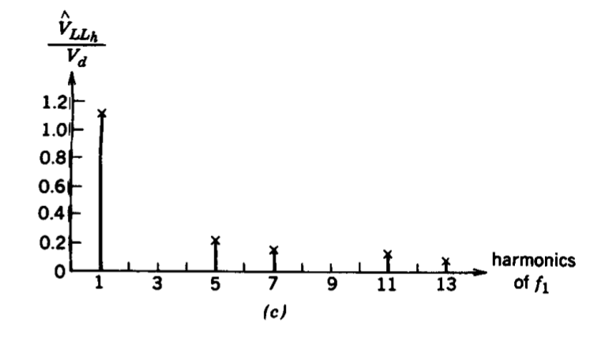 --- ## Line-to-Neutral voltages: ### Neutral point is floating -- 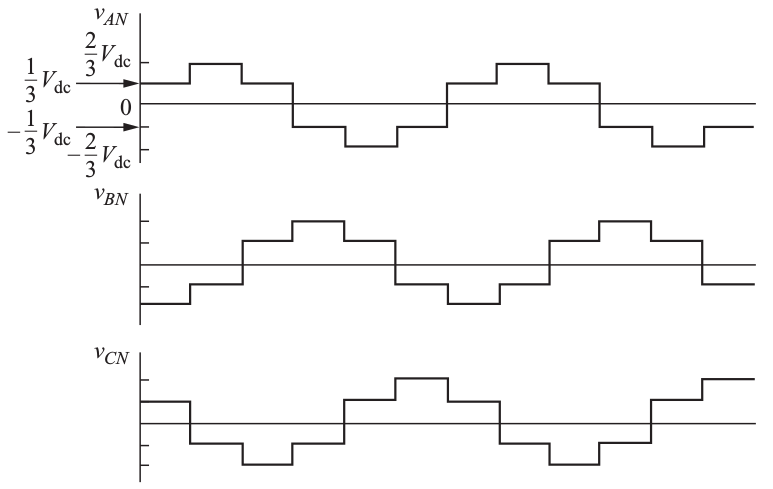 ### Voltage level changes every 60 degrees (that's why it's a six-step inverter!) --- ## Line-to-Neutral Harmonics -- ## Fourier Coefficients ### \\(\hat{V}\_{n,l-N} = \dfrac{1}{n}\dfrac{2}{3\pi}V\_{dc}(2 +cos(\dfrac{\pi n}{3}) - cos(\dfrac{2\pi n}{3}))\\) -- ### For: \\(n = 6k \pm 1 = 1,5,7,11,13...\\) -- ### Simpler Form -- ### \\(\hat{V}\_{n,l-N} = \dfrac{1}{n}\dfrac{2}{\pi}V\_{dc}\\) --- ## Line-to-Neutral Harmonics ### \\(\hat{V}\_{n,l-N} = \dfrac{1}{n}\dfrac{2}{\pi}V\_{dc}\\) ### For: \\(n = 6k \pm 1 = 1,5,7,11,13...\\) - ### No even harmonics - ### No third order harmonics --- ##Example: (D. Hart . 8-12) -- ### For the six-step three phase inverter shown below, Vin=100V, \\(f\_{out}=60Hz\\). The load is Y-connected to load with a phase load of \\(R=10 \Omega\\), \\(L=20 mH\\). -- ### Calculate the total harmonic distortion (THD) of the load current and voltage. --- ##Example: (D. Hart . 8-12) --- ## Switching Sequence <img src="./images/ee464/six_step_switches.png" alt="Drawing" style="width: 700px;"> --- ## Line-to-Line Voltages --- ## Equivalent Phase Voltages --- ##Example: (D. Hart . 8-12) ### Amplitude for load current at each frequency: ### \\(I\_n=\dfrac{V\_{n,L-N}}{Z\_n}\\) -- \\(=\dfrac{V\_{n,L-N}}{\sqrt{R²+(n \omega L)²}}\\) --- ##Example: (D. Hart . 8-12) ### Amplitude for load current at each frequency: ### \\(I\_n=\dfrac{V\_{n,L-N}}{Z\_n} = \dfrac{V\_{n,L-N}}{\sqrt{10²+(n 2 \pi 60 \, 0.02)²}}\\) -- ### Line-to-Neutral Harmonics ### \\(\hat{V}\_{n,l-N} = \dfrac{1}{n}\dfrac{2}{\pi}V\_{dc}\\) ### For: \\(n = 6k \pm 1 = 1,5,7,11,13...\\) --- 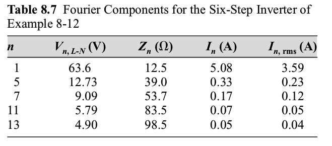 ### Voltage THD= -- #### \\(\dfrac{\sqrt{ \sum\_{n=2}^{\infty} V\_n²}}{V\_{1,rms}} \approx \dfrac{\sqrt{12.73²+9.09²+5.79²+4.90²}}{63.6}=0.31=31\%\\) --- ### Current THD= -- #### \\(\dfrac{\sqrt{ \sum\_{n=2}^{\infty} I\_n²}}{I\_{1,rms}} \approx \dfrac{\sqrt{0.23²+0.12²+0.05²+0.04²}}{3.59}=0.07=7\%\\) -- ### [Voltage Plot](https://www.google.com.tr/search?ei=1E_DWtwJhZLoBITenLgK&q=sin%28x%29%2Bsin%285x%29%2F5%2Bsin%287x%29%2F7%2Bsin%2811x%29%2F11%2Bsin%2813x%29%2F13&oq=sin%28x%29%2Bsin%285x%29%2F5%2Bsin%287x%29%2F7%2Bsin%2811x%29%2F11%2Bsin%2813x%29%2F13&gs_l=psy-ab.3...3238.6702.0.9540.3.3.0.0.0.0.154.392.0j3.3.0....0...1c.1.64.psy-ab..0.0.0....0.ut757zYR-Lg), [Current Plot](https://www.google.com.tr/search?ei=_tjEWrz2McHv6QSByb3IBQ&q=plot+5.08*sin%28x%29%2B0.33*sin%285x%29%2B0.17*sin%287x%29%2B0.07*sin%2811x%29%2B0.05*sin%2813x%29&oq=plot+5.08*sin%28x%29%2B0.33*sin%285x%29%2B0.17*sin%287x%29%2B0.07*sin%2811x%29%2B0.05*sin%2813x%29&gs_l=psy-ab.3...6798.8060.0.8402.5.5.0.0.0.0.298.740.0j1j2.3.0....0...1c.1.64.psy-ab..2.0.0....0.ijL6lnnGqOQ) --- # Three Phase Voltage-Source Inverter -- --- # Sinusoidal PWM (SPWM) -- ### A triangular carrier wave is generated and compared with each phase. -- 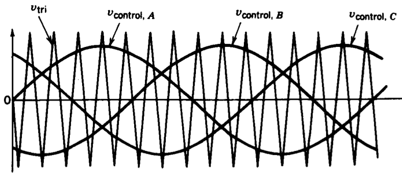 --- # Sinusoidal PWM (SPWM) -- ### Vd or 0 voltage is generated at \\(V\_{AN}\\) depending on the comparison. -- 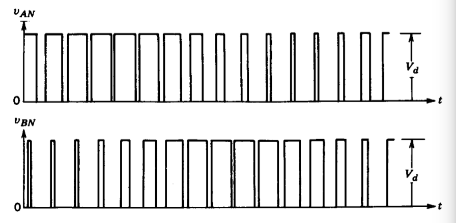 --- # Sinusoidal PWM (SPWM) -- ### Line to line voltage (\\(V\_{AB}=V\_{AN}-V\_{BN}\\)) -- 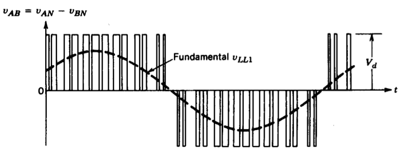 --- # Sinusoidal PWM (SPWM) ## Harmonics in the line voltage -- <img src="./images/ee464/3ph_vll_harmonics.png" alt="Drawing" style="width: 800px;"> ### Harmonics at the side bands, ### Like the unipolar but starts at mf. --- # Sinusoidal PWM (SPWM) ## Harmonics in the line voltage -- <img src="./images/ee464/3ph_vll_harmonics.png" alt="Drawing" style="width: 800px;"> ### If mf is small, it is better to use synchronized PWM, and mf should be an odd interger, preferably multiple of 3 to reduce harmonics. --- # Sinusoidal PWM (SPWM) ## Harmonics in the line voltage -- 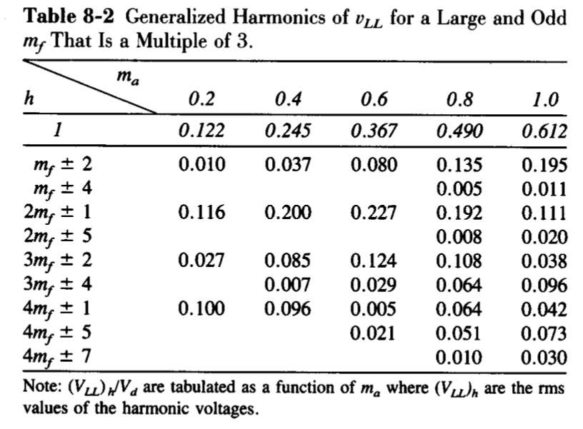 --- # Voltage Levels? -- ## Linear Region (\\(m_a \lt 1\\)) -- ### \\(\hat{V}\_{AN1}=m\_a\dfrac{V\_d}{2}\\) -- ### \\(V\_{l-l, rms}= \dfrac{\sqrt{3}}{\sqrt{2}}m\_a\dfrac{V\_d}{2}\\) -- ### \\(V\_{l-l, rms}= 0.612 V\_d\\) (max in linear region) --- # Voltage Levels? -- ## Overmodulation (\\(m_a \gt 1\\)) -- ## Square-Wave Operation? -- ### \\(V\_{l-l, rms}= \dfrac{\sqrt{3}}{\sqrt{2}}\dfrac{4}{\pi}m\_a\dfrac{V\_d}{2}\\) -- ### \\(V\_{l-l, rms}= 0.78 V\_d\\) -- ### \\(V\_{l-l, rms,h}= \dfrac{0.78}{h} V\_d\\) for \\(h=6n \pm 1\\) --- # Voltage Levels? -- 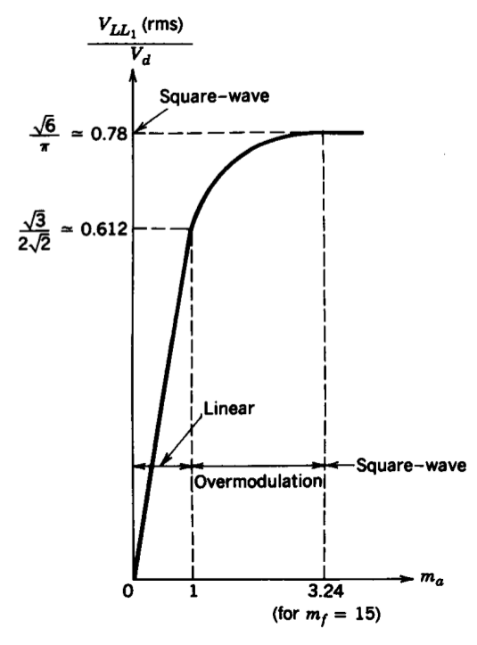 --- ## You can download this presentation from: [keysan.me/ee464](http://keysan.me/ee464) --- ## Harici Slaytlar --- # Push-Pull Inverter -- ## Similar to Push-Pull Converter <img src="./images/ee464/push_pull.png" alt="Drawing" style="width: 600px;"> -- ## But without the rectifying diodes --- # Push-Pull Inverter -- 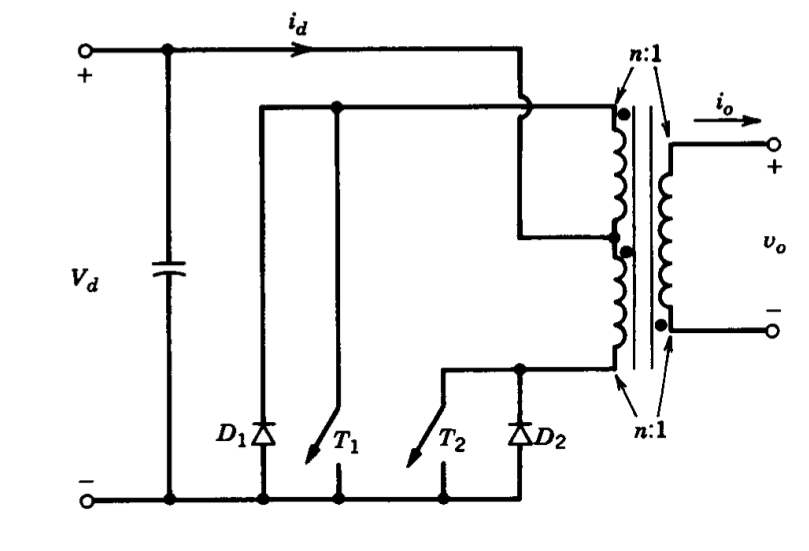 -- ## T1, T2 operates in sequence --- # Push-Pull Inverter -- ## Voltage output can be adjusted by the turns-ratio -- ## \\(\hat{V}\_{o1} = m\_a \dfrac{V\_d}{n}\\) --- # Push-Pull Inverter ## Advantages? -- - ### Only single transistor conduct at a time, -- small voltage drop -- - ### Especially important for low voltage applications (e.g. fed from a battery) -- - ### There are a few PV applications as well -- - ### Transistors have common ground (no isolation required for gate drives) --- # Push-Pull Inverter ## Disadvantages? -- - ### What is the required voltage rating of the transistors? -- ### \\(V_T = 2 V_d\\) ### Therefore may not be practical for higher input voltages -- - ### A good transformer, with high coupling is required (to reduce energy in the leakage inductance) --- # Switch Utilization in Single Phase Inverters -- ## Ratio of the output power to max. power capacity of the switches -- ## Assume highly inductive load, no current harmonics (just the fundamental) -- ### \\(= \dfrac{V\_{o1}I\_{o,max}}{q V\_T I\_T}\\) -- ## Maximum utilization occurs at square wave --- # Switch Utilization in Single Phase Inverters -- ## Half Bridge Inverter -- ### Voltage rating? -- ### \\(V\_T = V\_{d,max}\\) -- ### Current rating? -- ### \\(I\_T = \sqrt{2} I\_{o,max}\\) --- # Switch Utilization in Single Phase Inverters -- ## Half Bridge Inverter ### Output Voltage: \\( V\_{o1,max} = \dfrac{4}{\pi \sqrt{2}} \dfrac{V\_{d,max}}{2}\\) -- ### Max. Switch Utilization -- ### q=2 ### \\(= \dfrac{1}{2\pi} \approx 0.16\\) --- # Switch Utilization in Full Bridge Inverter -- ## Voltage, Current Ratings? -- : Same with Half Bridge -- ## q= -- 4 -- ## Voltage output = -- twice of the half bridge -- ## Switch utilization=? -- ### \\(= \dfrac{1}{2\pi} \approx 0.16\\) --- # Switch Utilization in Push-Pull Inverter -- ## Voltage, Current Ratings? -- ### \\(V\_T = 2 V\_{d,max}\\) -- ### \\(I\_T = \sqrt{2} \dfrac{I\_{o,max}}{n}\\) -- ### Output Voltage: \\( V\_{o1,max} = \dfrac{4}{\pi \sqrt{2}} \dfrac{V\_{d,max}}{n}\\) --- # Switch Utilization in Push-Pull Inverter -- ## q =2 -- ## Switch Utilization -- ### \\(= \dfrac{1}{2\pi} \approx 0.16\\) --- # Switch Utilization in Linear Region -- ### \\(= \dfrac{1}{2\pi}\dfrac{\pi}{4} m\_a = \dfrac{1}{8} m\_a\\) -- ## Linear Region ### \\(= 0.125 \\) when \\(m\_a=1\\)